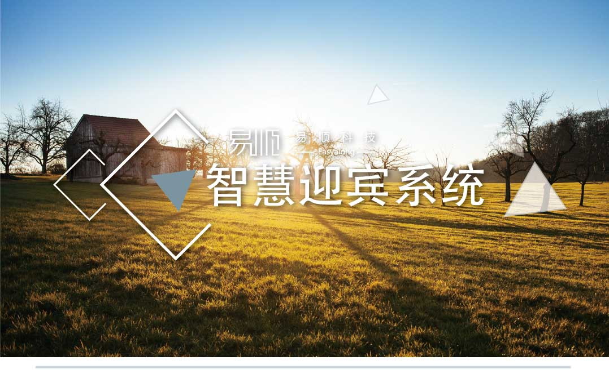
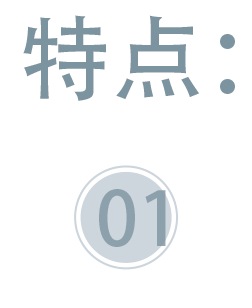
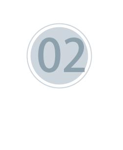
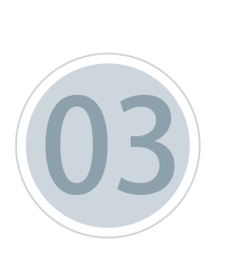

<div class="pages">
    <div data-page="features-usher" class="page no-navbar">
        <div class="page-content">
            <div class="navbarpages">
                <div class="navbar_left">
                    <div class="logo_text"><a href="index.html"><span>易顺</span>科技</a></div>
                </div>
                <a href="#" data-panel="left" class="open-panel">
                    <div class="navbar_right"></div>
                </a>
            </div>
            <div id="pages_maincontent">
                <!-- <h2 class="page_title" style="margin-bottom: 0px;">智慧迎宾系统</h2> -->
                
                <!-- 正文开始 -->
                <div style="width: 100%; height: auto;">
                    
                    <div style="float: left; width: 70%;padding: 10px;">
                        <p>排队预定和迎宾控台完美结合，无需巡台迎宾便能对餐位状态了如指掌，灵活配置客人就餐，提高餐厅翻台率。</p>
                    </div>
                    <div class="clear"></div>
                </div>
                <div style="width: 100%;padding:10px; height: auto;">
                    <div style="float: left; width: 70%;padding: 10px;">
                        <p>迎宾通过控台就座功能将餐位控制转给服务员，服务员完成下单，加菜，打折，买单，就餐结束， 服务员通过清台将餐位转入空闲状态，迎宾安排下一档 客人入座。</p>
                    </div>
                    
                    <div class="clear"></div>
                </div>
                <div style="width: 100%;padding:10px; height: auto;">
                    
                    <div style="float: left; width: 70%;padding: 10px;">
                        <p>可根据现场排队情况在有人迎宾和无人迎宾之间进行切换，无人迎宾将根据餐厅餐位状态 和现场排队情况自动引导客人 到指定餐位就座，无需人工干预。</p>
                    </div>
                    <div class="clear"></div>
                </div>
                
            </div>
        </div>
    </div>
</div>